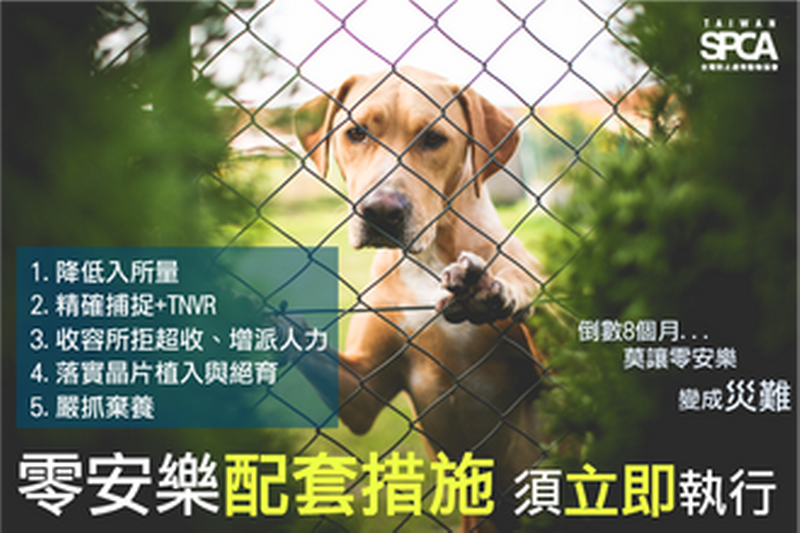

安樂死介紹
流浪動物的是台灣長久以來的問題，以往路上的流浪動物一旦被抓入收容所，只要12日沒有人認領，就可能會進行安樂死，但也無助於改善問題的發生；在電影十二夜上映之後，這些問題又被搬上檯面，經過民代和動保組織的推動之下，成功於民國104年通過立法，民國106年開始實施，在短短的兩年就實施，看似動作迅數，可是急促的實施，卻沒有相對應的配套措施，讓SPCA（台灣防止虐待動物協會）提出質疑，並要求配套措施須立即執行；也導致一名園長因承受不了壓力，服下狗用安樂死藥劑自殺，英國 BBC也曾針對台灣寵物遭大量遺棄且繼續繁殖的問題提出質疑，若無法改善其根本問題始終無法解決流浪動物產生的問題。
安樂死，原名為人道毀滅，是以最低的受痛苦程度，把動物的生命「人為結束」，安樂死一般的原因是不治的疾病、經濟上無法繼續飼養、或者實驗室的實驗程序需要，對於被飼養的動物，這個程序被委婉的稱為上路或者說再見。

圖片來源：台灣防止虐待動物協會(SPCA)
安樂死法規
民國104年將動物保護法第二章的十二條第七項的俗稱十二日條款進行修正及刪除 第十二條 對動物不得任意宰殺。但有下列情事之一者，不在此限：
7.收容於動物收容處所或直轄市、縣（市）主管機關指定之場所，經通知或公告逾十二日而無人認領、認養或無適當之處置。
修正為
收容於動物收容處所或直轄市、縣（市）主管機關指定之場所，經獸醫師檢查患有法定傳染病、重病無法治癒、嚴重影響環境衛生之動物或其他緊急狀況，嚴重影響人畜健康或公共安全。
其他相關法規
動物保護法
第 12 條
對動物不得任意宰殺。但有下列情事之一者，不在此限：
三、為控制動物群體疾病或品種改良之目的。
四、為控制經濟動物數量過賸，並經主管機關許可。
五、為解除動物傷病之痛苦。
六、為避免對人類生命、身體、健康、自由、財產或公共安全有立即危險 。
七、收容於動物收容處所或直轄市、縣（市）主管機關指定之場所，經獸 醫師檢查患有法定傳染病、重病無法治癒、嚴重影響環境衛生之動物 或其他緊急狀況，嚴重影響人畜健康或公共安全。
第 13 條
依前條第一項所定事由宰殺動物時，應以使動物產生最少痛苦之人道方式 為之，並遵行下列規定：
一、除主管機關公告之情況外，不得於公共場所或公眾得出入之場所宰殺 動物。
二、為解除寵物傷病之痛苦而宰殺寵物，除緊急情況外，應由獸醫師執行 之。
三、宰殺收容於動物收容處所或直轄市、縣（市）主管機關指定場所之動 物，應由獸醫師或在獸醫師監督下執行之。
四、宰殺數量過賸之動物，應依主管機關許可之方式為之。
中央主管機關得依實際需要，訂定以人道方式宰殺動物之準則。
安樂死利弊
雖然動物收容所的”十二夜”已經廢除兩年多了，但現在還是可以安樂死的，但是要有專業人員評估，可以在適當的情況下幫助寵物，同時也是幫助主人脫離痛苦，但是雖然聽起沒什麼，但是凡事有利必有弊，即使法律有規定了，但不可能所有人都遵守，在不為人知的地方一定還是有隨便亂安樂死的人，我們無從得知也無從幫忙，我們唯一能做的就只有約束自己，不要將動物的生命隨意揮霍。